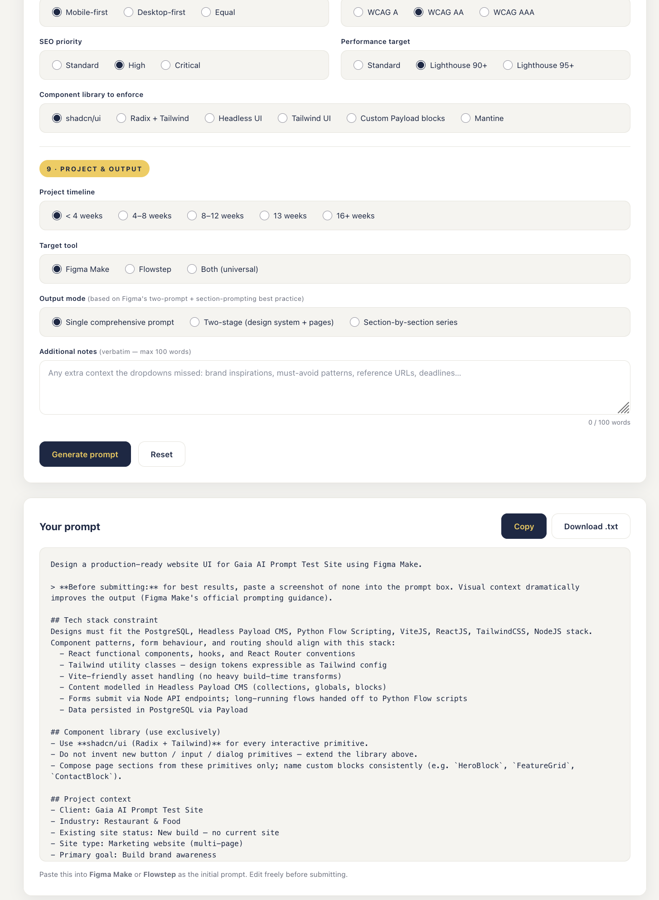
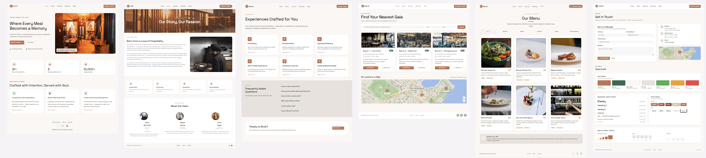

The story, in one paragraph
At 9:00 PM GMT+8 on a Wednesday evening, a Gaia operator opened a static web app and answered 52 dropdown questions. The app — itself AI-built — emitted a structured prompt anchored to Gaia's 3PVRTN stack. They pasted it into Flowstep, which produced six pixel-faithful Vite + React projects. Those landed in a working folder, and Claude Code took over: consolidating the six exports into one monorepo, scaffolding a Payload CMS backend with six typed collections, provisioning Postgres, deploying to a multisite Nginx + PM2 server, issuing TLS via certbot, and iterating until the marketing site was production-quality. By 3:00 AM the same night, flowstep.gaiada.online was live, the Payload admin was login-ready for content editors, the contact form persisted to the database, and Schema.org JSON-LD was being served on every menu item — generated server-side from CMS data, not hardcoded. One operator. Six hours. About 80% of the keystrokes belonged to AI.
Why this matters for teams
Most agencies still treat new client builds like artisan work — discovery week, design week, build sprint, content sprint, deploy week. Gaia's experiment proves a different shape is possible: scaffold the visible 80% in an evening, spend the rest of the engagement on the parts that need a human — copy, photography, content modelling, integrations, polish.
The unlock isn't any single AI tool. It's the pipeline — a series of constrained handoffs where each stage's output is the next stage's input, with the same stack assumption baked in throughout.
The pipeline
Prompt Builder
~52-question form generates a stack-anchored design prompt.
Flowstep
AI design tool produces 6 standalone Vite+React pages.
Claude Code
Consolidates, wires Payload CMS, deploys to production.
Live site
HTTPS, CMS-driven, monitored, deployable from main.
Stage 1 — The Prompt Builder
The questionnaire is at gaia-digital-agency.github.io/aiprompt_web. It's a single static HTML/CSS/JS app, also AI-built, that asks ~52 questions across nine sections — project basics, audience, visual direction, site structure, functionality, tracking, content readiness, technical, output mode — and generates a structured Flowstep / Flowstep prompt with the 3PVRTN stack constraint baked in:
PostgreSQL · Payload CMS · Python flow scripting · Vite · React · Tailwind · Node

For Flowstep, the answers were restaurant marketing site, 5 pages, terracotta + emerald palette, geometric sans, Lighthouse 90+, WCAG AA, shadcn/ui exclusive. The Builder produced one self-contained prompt — about 150 lines of structured Markdown — that captured every constraint a designer would otherwise email back and forth for a week.
Stage 2 — Flowstep
The prompt was pasted into Flowstep. Figma's AI design tool generated six separate Vite + React 19 + Tailwind v4 + shadcn/ui projects — one per page (Home, About, Services, Branches, Menu, Contact) — plus a PNG mockup of each. Together: ~5,100 lines of pixel-faithful JSX, all using shadcn primitives, all in the right palette and typography.
Flowstep's strength is fidelity-to-brief at speed. Its weakness is that each page is a standalone project — disconnected, no router, no shared header, no backend. Useful raw material; not a deliverable.

Stage 3 — Claude Code, the Coding Partner, takes it from there
This is where the heavy lifting happened, in partnership. Claude Code (Anthropic's CLI, running Opus 4.7 with a million-token context) operated as a full-stack Coding Partner with shell access — joint work with the operator on application code, Postgres provisioning, migrations, PM2 supervision, live Nginx configuration, and TLS issuance, all in the same session.
What the Coding Partner scaffolded (frontend)
Merged the six standalone Vite apps into a single pnpm monorepo. Extracted shared SiteHeader and SiteFooter. Wired React Router 7 with Suspense-based code splitting (Home eager as the LCP target; everything else lazy). Authored a no-deps usePageMeta hook to replace react-helmet-async, which doesn't support React 19. Lifted hardcoded hex colors into Tailwind v4 @theme tokens. Wired the contact form with honeypot + rate limit + sonner toast feedback. Added BranchDetailPage for /branches/:slug with Schema.org Restaurant JSON-LD generated from CMS data.
What the Coding Partner scaffolded (backend, from scratch)
packages/cms/: Payload CMS v2.32 on Express, port 3030. Six collections — Users, Media, Branches, MenuItems, FAQs, ContactSubmissions. Postgres adapter via drizzle. Custom POST /api/contact endpoint with zod validation. Idempotent seed.ts producing the admin user, three branches, four FAQs, and ten menu items. CORS + CSRF allowlist. React 18 isolated from the web's React 19 to keep the admin UI bundle clean.
What the Coding Partner scaffolded (CMS-driven frontend)
A small useCms SWR-style hook (no extra dep — just fetch + an in-memory cache). Wired BranchesPage, BranchDetailPage, MenuPage (with category Tabs as state-driven filter), and ServicesPage FAQ accordion all to fetch from Payload's REST API. Generated Schema.org Menu / MenuSection / MenuItem JSON-LD with suitableForDiet and offers.price from the CMS — making good on what the original scaffold had only claimed in a developer note.
What the Coding Partner scaffolded (infra)
PM2 ecosystem config, Nginx vhost block (appended to the existing subdomains.gaiada.online file matching fleet convention), Postgres bootstrap SQL, deploy script, backup script, GitHub Actions CI workflow. On the server: chowned the directory, generated a 32-byte PAYLOAD_SECRET, created the Postgres role + DB, ran migrations, ran seeds, integrated the Nginx vhost, ran certbot --nginx for Let's Encrypt + HTTP→HTTPS 301, and registered the PM2 app for boot persistence.
Why Payload CMS earns the "P" in 3PVRTN
The piece that turns this from "an AI-scaffolded landing page" into "a site a client can actually run" is Payload CMS. Headless, TypeScript-native, and backed by Postgres via drizzle — Payload is the spine that lets a non-developer take over once the engineering night is done.
What Claude shipped in Payload, on the first night
| Collection | Drives on the public site |
|---|---|
Branches | /branches list and every /branches/:slug detail page, including Schema.org Restaurant JSON-LD generated from the row. |
MenuItems | /menu grid with category filter; Schema.org Menu / MenuSection / MenuItem JSON-LD with suitableForDiet and offers.price. |
FAQs | The accordion on /services, with rich-text answers and editor-controlled order. |
Media | Image uploads with auto-generated thumbnail / card / hero size variants. |
Users | Admin auth — JWT cookie, role-aware access controls. |
ContactSubmissions | Inbox for the contact-form endpoint. Public create blocked at the collection level; only the server-side /api/contact handler can write, with overrideAccess: true. |
Why this matters for the team
Once the collections are defined, everything downstream becomes free:
- Auto-generated admin UI at
/admin— clients log in, edit content, upload images. No CMS to integrate, no admin to design. - Auto-generated REST + GraphQL APIs — the frontend consumes
/api/branches,/api/menu-items,/api/faqs; type contracts shared between server and client via Payload's generated TypeScript types. - Drizzle migrations to Postgres — schema changes versioned in code, reviewable in PRs, applied with one command.
- Hooks for cross-cutting work — afterChange triggers (e.g. notify Slack on contact submission), beforeRead access policies, scheduled tasks via cron-friendly endpoints.
- One backend, three jobs — admin, API, and DB schema all served by a single Node process. PM2 watches one app, not three.
Compare to the alternative: standing up Sanity + Strapi + a separate admin UI + a separate API layer + a separate DB ORM. Each of those is a vendor relationship and a build-time dependency. Payload collapses the stack — and being TypeScript-native means the same AI that scaffolds a collection can scaffold the React component that consumes it, with end-to-end types.
/admin, not a developer ticket and a deploy.
Stage 4 — Live site, 3 AM
| URL | https://flowstep.gaiada.online |
|---|---|
| Admin | https://flowstep.gaiada.online/admin |
| TLS | Let's Encrypt, auto-renewing |
| Lighthouse | Performance 81 · Accessibility 95 · Best Practices 100 · SEO 100 |
| Routes verified | /, /about, /services, /branches, /branches/:slug, /menu, /contact, /admin, /healthz, /sitemap.xml, /robots.txt — all 200 |
| APIs verified | /api/branches, /api/menu-items, /api/faqs, /api/contact — all 200, persistence end-to-end |
Timeline
| Time (GMT+8) | What happened |
|---|---|
| 9:00 PM | Filled in the Prompt Builder questionnaire (Stage 1) |
| 9:15 PM | Pasted prompt into Flowstep, downloaded six page exports (Stage 2) |
| 9:45 PM | Claude Code session started — server recon + repo bootstrap |
| 10:30 PM | Frontend consolidation complete — single Vite app with six routes |
| 11:30 PM | Payload CMS scaffolded — six collections, contact endpoint, idempotent seed |
| 12:00 AM | First deploy to gda-s01 — pnpm install, drizzle schema migrate, seed |
| 12:30 AM | TLS issued via certbot, every route 200, Payload admin login working |
| 1:15 AM | v1.5 — wired CMS data into BranchesPage, MenuPage, FAQ accordion |
| 1:45 AM | Cleanup pass — deleted 27 MB of dead Flowstep source, stripped 530 lines of data-id noise |
| 2:30 AM | Flattened server layout to match fleet convention |
| 3:00 AM | Final smoke pass — site live, repo + server + docs all in sync |
What "80% AI" actually means
AI did: the Prompt Builder app itself; all the page JSX; the entire Payload backend, every collection, the contact endpoint, the seed script; all the infra; the server provisioning; the iteration when things broke (an ESM/CJS conflict in Payload v2 builds, an EADDRINUSE from an orphan node process, a serverURL empty-string fallback that Payload coerced to localhost, a Payload v2 migrate:create that no-ops new columns on existing tables, a Capistrano-style deploy layout that was wrong for the fleet — then flattened on instruction).
Human did: decided the project should exist; filled the form (~10 min); pasted the prompt; approved the architectural plan before going to YOLO mode; course-corrected mid-build ("DNS is .online not .com", "fleet uses flat git checkouts not Capistrano", "delete dead code", "match the PNGs"); spotted things AI missed (a broken Charred Eggplant image URL, a Figma boilerplate "Developer note" block on the menu page); approved server access via Google Cloud IAP.
The 5% human contribution was direction, taste, and verification — the parts that benefit most from a person in the loop. Everything else was AI.
The outcome — and how it compares
What you get out of this 6-hour pipeline: a well-designed, semi-customised UI faithful to the brief, paired with a fully managed Payload CMS the client can run themselves. That's roughly 60% of a finished product — every architectural piece in place, every page live, every collection editable, but with stock copy and stock photography that still need a content pass.
Gaia's other AI playbook — the Figma-to-Site Automation — pushes further. It takes around 12 hours end-to-end and ships closer to 85% of a finished product: brand-true visuals, more deeply customised components, real photography wired in. The trade-off is exactly what you'd expect — twice the time, ~25 more percentage points of polish.
| This pipeline (Prompt → Flowstep → Coding Partner → Payload) | Gaia Figma-to-Site Automation | |
|---|---|---|
| Time to live | ~6 hours | ~12 hours |
| % of finished product | ~60% | ~85% |
| UI | Well-designed, semi-customised — faithful to brief, light brand work | Brand-true, deeply customised, real photography |
| CMS | Fully managed Payload (admin + API + Postgres) | Fully managed Payload (admin + API + Postgres) |
| Best for | Discovery sprints, internal tools, MVPs, pitch-night demos | Client launches that need final-mile polish before handoff |
Both paths share the same backbone — Payload CMS on the 3PVRTN stack — so a project can start as the 6-hour build and graduate into the 12-hour treatment without rewriting anything. The CMS, the schema, the deploy pattern, and the routes all stay; only the surface gets richer.
What this means for your team
- Stack-anchored prompting is the unlock. Every artifact — design, components, deploy script — was constrained by 3PVRTN from the very first prompt. No AI hallucinated Next.js or MongoDB because the prompt didn't allow it. If your team has a standard stack, encode it once at the prompt layer and never re-explain it.
- Flowstep is a scaffolder, not a finisher. Treat its output as raw material. The pixel fidelity is real; the architecture isn't. Plan for a consolidation pass before you ship.
- Claude Code with operational scope is the multiplier. A coding AI that can also
ssh, runpsql, edit Nginx, and callcertbotis qualitatively different from one that only writes files. Most of the 6-hour speed came from removing the human as the dispatcher between "wrote code" and "ran code on a server". - Payload CMS is the right backend for AI-scaffolded sites. Headless, type-safe, drizzle-backed Postgres, admin UI included. Once the collections are defined, the same AI can seed them, fetch from them, and render Schema.org markup from them — no separate ORM or admin tool to bolt on.
- The human is still the editor. Every architectural decision (deploy layout, scope of v1, CMS-driven vs hardcoded) was made by the human. The AI executed; the human directed and verified. That's the actual workflow — not "AI replaces the team" but "AI handles the typing, the team handles the judgement".
The repeatable playbook
For your next client build:
- Fill in the Prompt Builder for the client. ~10 minutes.
- Paste the generated prompt into Flowstep. ~5 minutes for the AI to scaffold.
- Hand the Figma exports + the brief to a Claude Code session with shell access to your fleet box.
- Tell it: "Consolidate, wire Payload CMS for content sections, deploy to
<site>.gaiada.onlineongda-s01. Match fleet convention." - Expect to spend an evening watching, redirecting, and verifying. Expect a live site by morning.
Then the engagement actually begins — copywriting, photography, real content modelling, integrations, performance pass. The plumbing is done in night one.